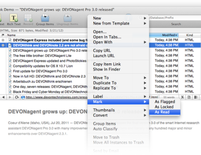

|
|
Read newsfeeds |
|
 DEVONthink Pro Office comes with built-in support for RSS, RDF, and Atom news feeds, which makes it a reliable basic news reader. In addition, its integrated web browser supports news feeds and displays them like any other web page. Use its document-oriented structure to organize bookmarks and store news feeds like Internet-updated smart groups. Mix live news feeds with static documents, e.g., in your project materials. Possible uses:
Continue to read here: |